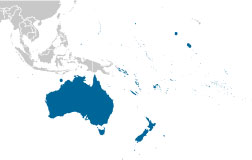

AUSTRALIA - OCEANIA
American Samoa
Ashmore and Cartier Islands
Australia
Christmas Island
Cocos (Keeling) Islands
Cook Islands
Coral Sea Islands
Fiji
French Polynesia
Guam
Kiribati
Marshall Islands
Micronesia, Federated States of
Nauru
New Caledonia
New Zealand
Niue
Norfolk Island
Northern Mariana Islands
Palau
Pitcairn Islands
Samoa
Solomon Islands
Tokelau
Tonga
Tuvalu
United States Pacific Island Wildlife Refuges
Vanuatu
Wake Island
Wallis and Futuna
